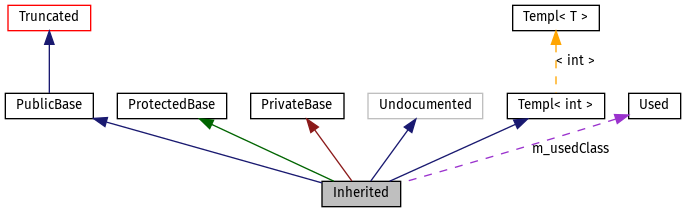

Bu dosya doxygen tarafından üretilen grafiklerin nasıl anlaşılacağını açıklar.
Aşağıdaki örneğe bakalım:
/*! Sadeleşme yüzünden görünmeyen sınıf */
class Invisible { };
/*! Sadeleşmiş sınıf, kalıtım ilişkisi gizli */
class Truncated : public Invisible { };
/* Doxygen yorumlarıyla dokümante edilmemiş sınıf */
class Undocumented { };
/*! Public kalıtımla türetilen sınıf */
class PublicBase : public Truncated { };
/*! Bir şablon sınıfı */
template<class T> class Templ { };
/*! Korumalı kalıtımla türetilen sınıf */
class ProtectedBase { };
/*! Özel kalıtımla türetilen sınıf */
class PrivateBase { };
/*! Türetilen sınıf tarafından kullanılan sınıf */
class Used { };
/*! Pekçok sınıftan türeyen bir sınıf */
class Inherited : public PublicBase,
protected ProtectedBase,
private PrivateBase,
public Undocumented,
public Templ<int>
{
private:
Used *m_usedClass;
};
Bu kod aşağıdaki şemayı oluşturur:

Yukarıdaki şemadaki kutular aşağıda açıklanmıştır:
-
Dolu gri kutu şemanın ait olduğu yapı(struct) ya da sınıfı gösterir.
-
Siyah çerçeveli bir kutu dokümante edilmiş bir yapı(struct) ya da sınıfı gösterir.
-
Gri çerçeveli bir kutu dokümante edilmemiş bir yapı(struct) ya da sınıfı gösterir.
-
Kırmızı çerçeveli bir kutu tüm kalıtım/içerme ilişkileri gösterilmemiş ve dokümante edilmiş bir yapı(struct) ya da sınıfı gösterir. A şema belirlenen sınırlara sığmıyorsa sadeleştirilir.
Okların anlamı aşağıdaki gibidir:
-
Koyu mavi ok iki sınıf arasındaki public kalıtım ilişkisini göstermekte kullanılır.
-
Koyu yeşil ok korumalı kalıtımı gösterir.
-
Koyu kırmızı ok özel kalıtımı gösterir.
-
Mor kesikli çizgi bir sınıfın diğeri tarafından içeriliyor ya da kullanılıyor olduğunu gösterir. Ok işaret edilen sınıfın hangi değişken(ler) tarafından erişildiğini gösteren etiketle işaretleniştir.
-
Sarı kesikli çizgi şablondan üretilen bir sınıf ve ilgili şablon sınıfı arasındaki ilişkiyi gösterir. Ok türeyen sınıfın şablon parametreleriyle etiketlenmiştir.
 1.8.12
1.8.12